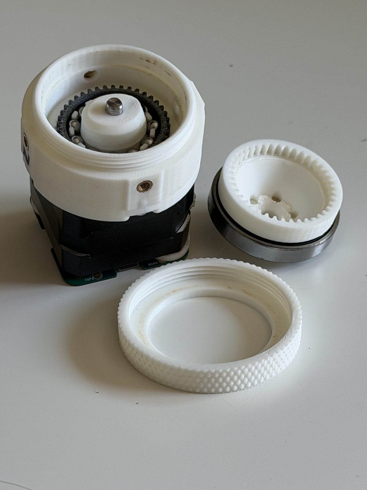

<archived/> · v1.0 (RevA)
HD20
A 3D-printable 20:1 harmonic drive that bolts onto any standard NEMA 17 stepper. The first drive we shipped, and still the only one with a load-cell report behind it: 3.3 N·m peak, 58% best efficiency.
Free and open under CC BY-SA 4.0.

20:1reduction
3.3 N·mmeasured peak torque
58%best efficiency
~$3.96hardware per unit
<specs/>
| Reduction | 20:1 |
|---|---|
| Tooth profile | Cycloidal, module 0.8, 40-tooth flexspline against a 42-tooth circular spline |
| Measured torque | 2.32 N·m steady-state, 2.59 N·m peak (fresh, 0.7 A); up to 3.29 N·m steady-state at 1.4 A |
| Efficiency | 58% best (super-tightened output spline, 0.7 A) |
| Motor | Any NEMA 17 with a 5 mm shaft |
| Lubrication | Super Lube synthetic PTFE grease |
| Printed parts | 10 pieces across 9 unique parts |
| Fasteners | 8 × M3×0.5 × 6 mm button head screws per drive |
| Materials | PLA throughout, PETG for the flexspline |
| Version | v1.0 (RevA), August 2026 |
| License | CC BY-SA 4.0 |
<test-data/>
The full load-cell report is still up, with the raw curves and the honest unit-to-unit spread:
read the HD20 torque report →<the-files/>
Everything lives in scar8969/drive.magic. Grab the packaged bundles from the releases page.
STEP
Solid geometry, all nine parts. Slice it to print, or open it in CAD to remix.
DXF
The four tooth profiles, straight out of the harmonic maker.
<known-behaviour/>
- PLA creeps under sustained load. Holding a heavy static load for hours will slowly deform the circular splines.
- Unit-to-unit variation is real. Two HD20s of the same design differed by up to 18% at the same current.
- Output spline preload is the biggest tuning knob. Tightening it further took one unit from 2.37 to 2.55 N·m.
- Torque drops after running in. One HD20 measured 2.32 N·m fresh and 2.08 N·m after further running. Plan around the run-in figure, not the fresh one.
<make-your-own/>
The HD20's tooth profile is in the harmonic maker too. Open it, nudge a number, and export a new DXF:
open the HD20 profile in the harmonic maker →